October 2021
Structure editors have long promised to improve the programming experience for beginners and experts alike. By eliminating parse errors, they provide cognitive benefits for novices [10, 29, 30] and end-users [5, 11, 31]; simplify language composition [25] and language-aware editor tooling [21]; and form an essential component of truly continuous live programming [19, 20]. Yet, in the forty years since the idea was first introduced and implemented [22], structure editing has failed to reach mainstream use by programmers beyond the novice level. The problem, as many have observed [1, 7, 13, 15, 16, 18, 23, 26], is that structure editors can be too slow or difficult to use.
For example, while block-based editors like Scratch [14] excel at introducing programming to children and end-users, they soon become unwieldy as users gain experience and create larger programs. Cited issues include their inefficient mouse-driven input, low visual information density, and rigid tree-based construction of operator sequences [2, 9, 17].
Other structure editors like JetBrains MPS [27] resolve those particular issues with keyboard-driven text-like interfaces, but instead suffer from steep learning curves and difficult-to-predict editing behavior. Consider the violin plots below, adapted from [3], that show post-task questionnaire responses gathered in a controlled user study of MPS. Each plot partitions the user responses by study groups: novice MPS users (Proj), expert MPS users (ProjE), and text editor users (Par). The left two plots show that MPS novices felt that selection was relatively slow and inaccurate despite a 45-minute training session and another 30-45 minutes worth of study tasks. Meanwhile, the right two plots show that MPS novices and experts alike struggled to predict the effects of deletion.
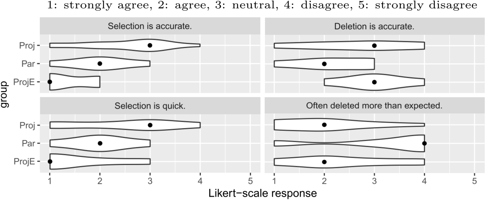
Whether they are mouse-driven and block-based, or keyboard-driven and text-like, structure editors as a whole have suffered from high viscosity [8], i.e., it is difficult to modify and restructure existing code. We believe this is a fundamental consequence of the basic assumption that structure editors should operate directly on the abstract syntactic structure of a program. This assumption restricts selections to complete program terms, a severe limitation compared to the arbitrary range selections of text editors.
In this essay, we describe a new approach to structure editing, called tile-based editing, that recovers many of the flexible and linear editing affordances of text editors. The key insight is that, in order to guarantee edit state well-formedness, it is sufficient to maintain a structure more relaxed than the abstract syntactic structure demands, but on which parsing is guaranteed to succeed.
Using a tile-based editor, the user manipulates structural components called tiles that are shaped to fit together according to their syntactic roles, à la blocks in a block-based editor. Unlike blocks, tiles directly model linear operator sequences and facilitate left-to-right editing using keyboard input.
Uniquely, tiles may be broken apart into shards as needed to specify arbitrary range selections up to token boundaries. Using a novel restructuring mode, the user may then “cut and paste” these selections like in a text editor. Unlike text-based cut-and-paste, however, restructuring mode ensures you paste your selections such that the result is a well-formed program term.
We now present an example-driven overview of tile-based editing using tylr, a tiny tile-based editor. Interested readers may follow along on a running instance of tylr at tylr.fun.
Say we are using tylr to edit a function that gets called by a generative drawing application [6]. The function takes an integer index and returns a circle—represented as a pair comprising its center point and radius—to be drawn in the xy-plane for every index. The initial program draws unit circles along the line y = x, as shown below.
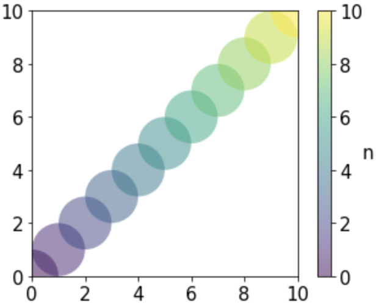 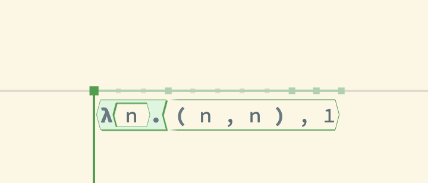
Panning the cursor over the program in tylr reveals the program structure as governed by tylr’s term syntax, the relevant subset of which is included below.
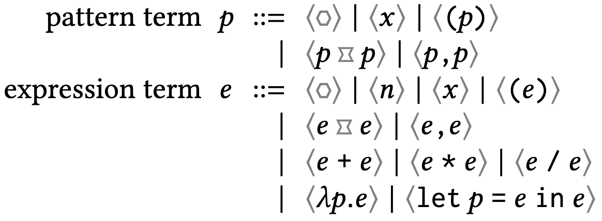
For example, the first edit state seen in the video shows the top-level function—an expression term as indicated by the green coloring—binding the pattern variable and returning an indexed circle. Notice how every term has a convex hexagonal shape.
Highlighted within each term is a substructure called a tile; with respect to the containing term, we say it is the term’s root tile. Each term’s root tile encompasses all root-level tokens used to represent the term, along with children of the term that the tokens delimit on both sides—such children we call bidelimited. For example, in the first edit state of the video above, observe how the function’s highlighted tile spans the function’s tokens λ and . as well as the bidelimited pattern child; however, it does not extend to the unidelimited body child.
Holding Alt/Option while panning the cursor reveals the program structure as governed by tylr’s tile syntax, shown below.
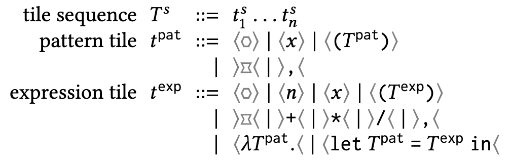
Tiles enjoy a flatter structure compared to the strictly hierarchical terms. Notice in the first edit state seen in the video, for example, how the tiles comprising the function body are siblings with the function term’s root tile. The tips of a tile indicate its syntactic role in the tile sequence as a(n):
Where traditional structure editors model their edit states using the strictly hierarchical term syntax, tylr instead models its edit state using the flatter tile syntax, precedence-parsing the tile structure as needed to produce the term structure. Indeed, the term structure shown in the first video is simply a decoration overlaid atop the actual tile structure shown in the second video. Moving forward, we will refer to structure editors with term-structured edit states as term-based editors.
The edit states above are in pointing mode, tylr’s default editing mode. Much like how a text editor’s cursor points at positions between characters in its default mode, tylr’s default cursor points at positions between tiles. tylr’s central guarantee is: if you are in pointing mode, then you can parse the tiles of your edit state into a well-formed program term.
Simply maintaining a well-formed tile structure according to the tile syntax alone, however, is not sufficient to uphold this guarantee. The generic sequential structure of tile sequences simplifies how we define edit operations, but does not guarantee that the tiles represent a well-formed operator sequence, or opseq for short. The qualifications for a tile sequence to be an opseq enjoy a simple physical metaphor:
If tylr maintains the opseq structure in pointing mode, then we have our guarantee, since precedence-parsing is total on opseqs.
For this reason, tylr automatically inserts and removes placeholder tiles called holes as we edit to maintain opseq structure. There are two kinds of holes: operand holes and operator holes . We will soon see a number of examples of automatic hole fixing as we turn our attention to editing.
By having us edit the tile structure, and only indirectly propagating those changes to the term structure, tylr supports many of the linear editing workflows to which we are accustomed in text editors.
Inserting and removing leaf tiles. For example, say we update our program to draw circles along the parabola y = x2/9. 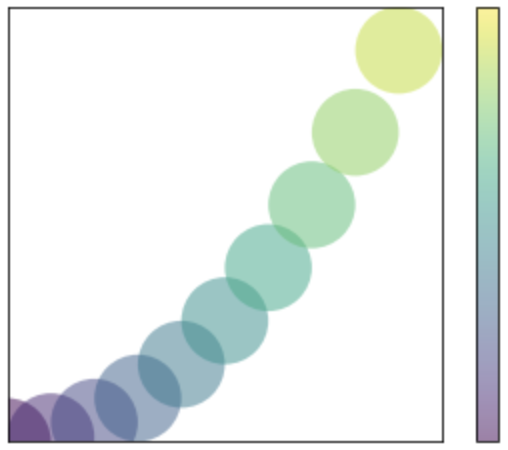 We can accomplish this simply by typing left-to-right:
If we decided now to draw circles along the reflected parabola x = y2/9, 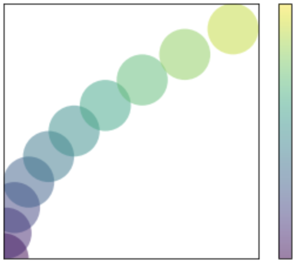 we could similarly remove the inserted tiles right-to-left from the y-coordinate and re-insert them in the x-coordinate.
These simple editing workflows are not trivial in traditional term-based editors because, from the perspective of the AST, linear construction of operator sequences is a complex, context-sensitive operation. Existing structure editors either embrace strictly tree-based construction of operator sequences [14]; defer to text at the expression level [12, 22], recovering linearity at the cost of structure; or solve the problem at the cost of complexity [24]. In contrast, tiles combined with automatic hole fixing make it easy to define linear editing operations without compromising structure.
Inserting and removing non-leaf tiles. While insertion and removal of leaf tiles closely mimics the text editing experience, this begins to change as we turn our attention to non-leaf tiles. For example, consider how we would remove the parentheses wrapping the origin coordinates in tylr:
Where a text editor would simply remove the closing parenthesis on the first Backspace, leaving us with a syntax error, tylr first enters an intermediate state in which it has “picked up” the closing parenthesis and highlighted the matching opening parenthesis. Pressing Backspace again then removes both parentheses.
This intermediate state is called restructuring mode, and we picked up the closing parenthesis into the backpack; we will soon discuss these at greater length. For now, notice how restructuring mode served as a sort of confirmation dialog, showing us that removing the token on which we hit Backspace would require deleting other tokens. We believe such explicit confirmation is important to prevent “spooky action at a distance”, especially in light of the MPS user data discussed in the introduction.
Now consider how we might re-insert the parentheses around the origin coordinates.
In a dual fashion to removal, inserting an opening parenthesis enters restructuring mode with its matching closing parenthesis in the backpack. Restructuring mode then allows us to move the parenthesis to the right and put it down. Notice the similarity to the text editing experience, which has an invoke-then-configure flow, whereas a typical structure editor would require you to select the body before parenthesizing, forcing preemptive configuration before invocation.
MPS supports a similar editing flow for parentheses in particular, but not any other syntactic forms also with matching delimiters. In contrast, as we will see next, tylr has well-defined restructuring behavior for arbitrary range selections.
Using the arrow keys while holding Shift enters tylr’s selecting mode.
Selecting mode lets us specify arbitrary range selections up to token boundaries. Notice how, when a tile is divided by a selection boundary, it is disassembled into individual shards; then, once they are all within or without the selection, the shards are reassembled into the original tile. A selection containing no shards is called intact, otherwise cracked.
We may understand restructuring mode, not simply as a tile insertion and removal aid, but more generally as a structured variant of cut-and-paste on range selections, regulated by their intact versus cracked structure.
Restructuring with a full backpack. In the previous section, we updated the circle drawing tracing the parabola y = x2/9 to its reflection x = y2/9 by deleting and re-inserting tiles. Alternatively, we could have selected those tiles—an impossible selection in a term-based editor—and used restructuring mode to move them.
We say that your backpack is full whenever its contents are, or could be assembled into, an intact selection. If your backpack is full, then you may move freely, since you may insert a selection of whole tiles anywhere without compromising the existing shard-balanced structure.
Often, however, your backpack’s contents are not an intact selection, nor can they be assembled into one, as we observed in the parentheses insertion and removal examples in the previous section. In that case, we say that your backpack is hungry…
Restructuring with a hungry backpack. Now we would like the circles’ radii to grow with their origin coordinates. 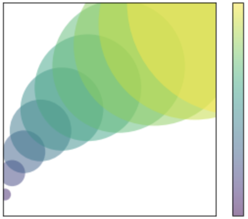 Accordingly we insert a let tile introducing variables x and y in the function body.
Our remaining task is to restructure our code so that x and y are bound to the origin coordinates ( n * n / 9 , n ) currently in the body of the let term. We select the in delimiter, disassembling the let-tile into a pair of shards; move right once; and put it down, upon which tylr reassembles the let-tile and returns us to pointing mode.
Notice that we skipped all cursor positions within the parentheses tile when we moved right. The in-shard in our backpack cannot be assembled into an intact selection on its own, meaning at least one matching shard—in this case, let x , y =—is anchored within the current tile sequence. This restricts our movement of the in-shard to cursor positions of the same sequence, as placing it in any other position would violate proper shard balancing.
We call the backpack full or hungry as a way to narrativize its control of our movement. When the backpack is full, it is satisfied and lets us move freely and leisurely through our code. When our backpack is hungry, it accelerates our movement through the current tile sequence in its impatience to end its hunger, which can happen in one of two ways. Either, like in the last example, we can empty the backpack, freeing it of all earthly possessions and desires; or we may feed it.
Feeding a hungry backpack. Now we rewrite the radius in terms of the variables x and y.
Along the way, however, we forgot to parenthesize the origin coordinates. We also notice that the parentheses in the definition of the let-tile are now redundant and decide to recycle them. We move the cursor to the right parenthesis, select it, and pick it up into the backpack. At this point the backpack is hungry and restricts our movement to the tile sequence within the let definition.
Instead of emptying our backpack like in the last example, this time we move over to the left parenthesis and pick it up as well. At this point our backpack is full, as it carries both shards needed to assemble a parentheses tile, and we may move freely again.
Picky eater. Not all selections can be picked up. We call the cursor positions marking the ends of a selection the selection’s caps. So far we have only encountered selections with caps of the same sort. Your backpack is a picky eater in the sense that it will refuse to carry any selections with caps of different sort.
Consider, for example, the following selection.
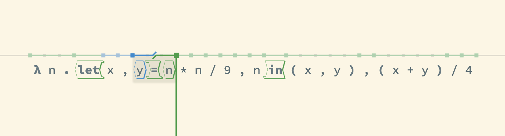
The left cap is pattern-sorted while the right cap is expression-sorted, as indicated by the two-toned broken overline. Picking up this selection would bring together tiles of different sort, so you are prevented from doing so.
Structure editing has a long history, dating back to the introduction of the Cornell Program Synthesizer [22] in 1981. Here we focus our attention on contemporary editors.
The most popular structure editors today are block-based editors such as Scratch, Snap!, App Inventor, Alice, and many more. In these editors, the user authors a program like the Scratch program shown below (adapted from [28]) by dragging-and-dropping blocks together on a canvas. Each block corresponds to a syntactic form of the underlying language and is shaped, based on its sort, to visually indicate how it should be placed relative to other blocks. tylr employs a similar metaphor of syntactic-forms-as-puzzle-pieces, but uses a uniform shape system across all sorts, thereby simplifying potential language extensions.
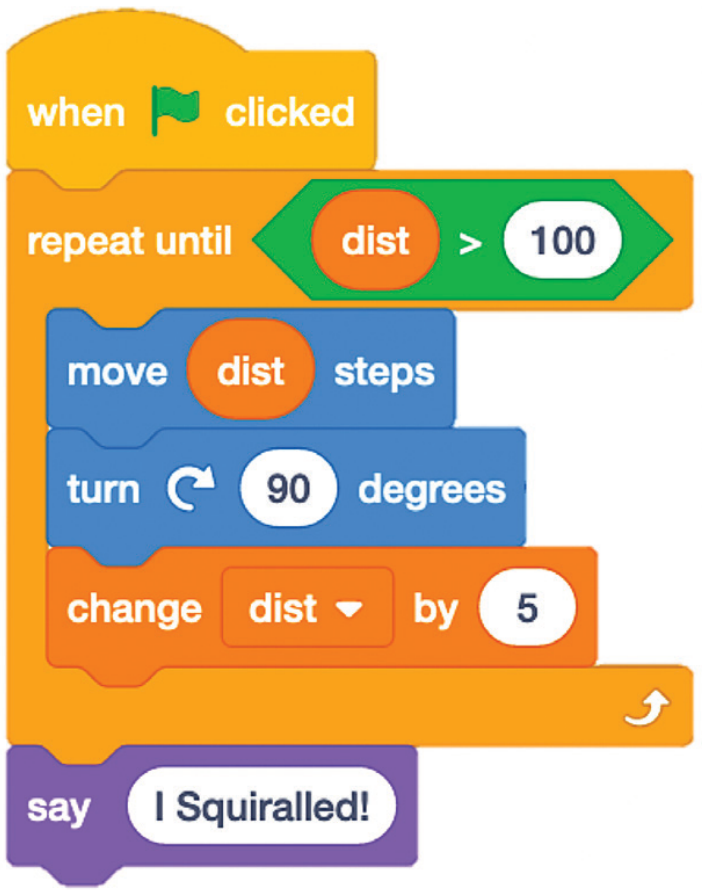
Block-based editors have seen great success in recent years at introducing children to programming, but they soon become unwieldy once users start creating and maintaining larger or more expression-oriented programs. For example—adapting an observation by Brown et al. [4]—constructing the small calculation shown on the left involves assembling seven blocks, each requiring a sequence of gestures to find and drag-and-drop the appropriate block into the right spot in the canvas; the equivalent construction in a text editor or tylr would take seven keypresses.
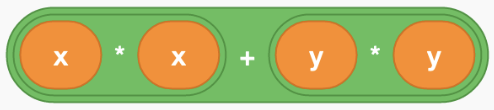
Meanwhile, in a user study of block-based editing involving large refactoring tasks, Holwerda and Hermans [9] elicited post-task user responses on the cognitive dimensions of block-based editing and found that viscosity was the most commented-on dimension with 24 remarks. Half (12) were positive, a majority of which were about the ease of refactoring when the selected elements corresponded to complete syntactic terms. Of the negative half, half (6) were about the difficulty of refactoring when the desired selection does not correspond to a complete term; for example, in the first Scratch program shown above, dragging the move block out of the repeat block drags all the statements below along with it, thereby requiring multiple gestures in sum to select and remove the single move block. These results help motivate the expressive selection capabilities of tile-based editing.
The issue of restricted selection is not particular to block-based editors; any term-based editor fundamentally limits selections to complete terms. Recognizing these pitfalls, some structure editors [12, 22] employ hybrid editing models, using structural editing for large syntactic forms while deferring to text editing at the leaves. This approach loses the benefits of structure editing at those levels, e.g., unrestricted language composition at the expression level. Moreover, while arbitrary text selections are possible within a text leaf, they cannot extend beyond those bounds and partially select any strictly structural forms.
JetBrains MPS [27] aims to present a text-like interface while maintaining well-formedness at all times. It uses an array of techniques to support text-like editing flows, such as side tranforms to rearrange trees in operator sequences while constructing them linearly; and dangling parenthesis annotations in the edit state to support constructing parentheses individually [24]. Despite these techniques, as a term-based editor, MPS does not support directly selecting partial terms [26]. For example, having typed 2 + 3 * 4 in MPS, it would not be possible to select 2 + 3 because this cuts across the parsed associative structure. Such restrictions are particularly surprising in an interface designed to look like text, as observed both in this example and our discussion of difficult-to-predict deletion in Section {#sec:Introduction}.
Term-based editors as a whole can be unexpectedly destructive when removing syntactic elements. For example, removing a block in a block-based editor removes all of its descendant blocks as well. MPS mitigates this by preserving the first child of a deleted term if they happen to share the same sort, but cannot preserve more than one child in a generic structure-preserving way. Owing to its more flexible tile structure—in particular, the convenient use of operator holes to concatenate multiple children—tylr can minimize removal by preserving all children of the same sort as the deleted tile.
Fructure is a term-based editor for the Lisp family of programming languages. Similarly motivated to reduce the viscosity of structure editing, Fructure features a novel transformation mode by which the user may select a term and replace it with suggestions from an autocomplete menu. This menu supports interactive and arbitrarily deep construction of the replacement term before committing the replacement; meanwhile, at each step, the originally selected term is present in the list of suggestions, thereby supporting expressive wrapping of selections over the course of transformation. The user may also “paint” multiple terms before entering transformation mode, in which case the painted terms also appear in the menu suggestions. Fructure is strictly term-based and moreover restricted to S-expression syntax, which has no infix operator sequences.
tylr demonstrates novel structural selection and restructuring methods, but it is limited as a practical authoring tool in several respects. tylr edit states are visually rendered as a single line no matter their size. Construction is invoked with single keypresses (e.g., a let-tile is constructed using the = key) and number literals and variables are limited to single digits and characters. Moreover, tylr’s underlying language is tiny and features neither a type system nor an evaluation semantics.
We developed tylr with the intention of scaling up its editing techniques to Hazel [21], a live programming environment featuring a structure editor with the usual multi-line text-like layout. Scaling up tile-based editing up to this setting poses additional design and engineering challenges, such as:
- did you intend negation or subtraction?);Hazel additionally maintains strong semantic guarantees: every edit state has a well-defined type and can be run to produce a well-defined result. The underlying expression language features, in addition to empty holes, non-empty holes that cordon off ill-typed portions of the program. Hazel is currently designed around a type-directed action semantics, which propagates contextual typing information down to the subject of its edit state so that it can insert and remove non-empty holes as needed to maintain well-formedness. We are currently working on decoupling Hazel’s typing concerns from the editing concerns so that we may cleanly extend tile-based editing with Hazel-style semantic invariants.
We implemented and ran a pilot user study on an early prototype of restructuring mode in July 2019, which suggested users quickly understood and appreciated the workflow in specific cases, but found the interface confusing given its ad hoc limitations. Now with a more principled and general design, we plan to run a controlled user study in which we compare the efficiency of and user sentiment toward text editing and tile-based editing in Hazel.